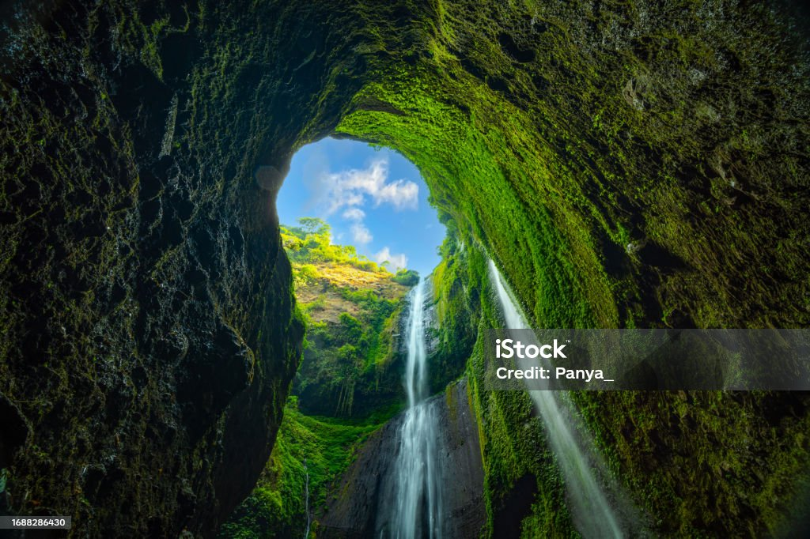
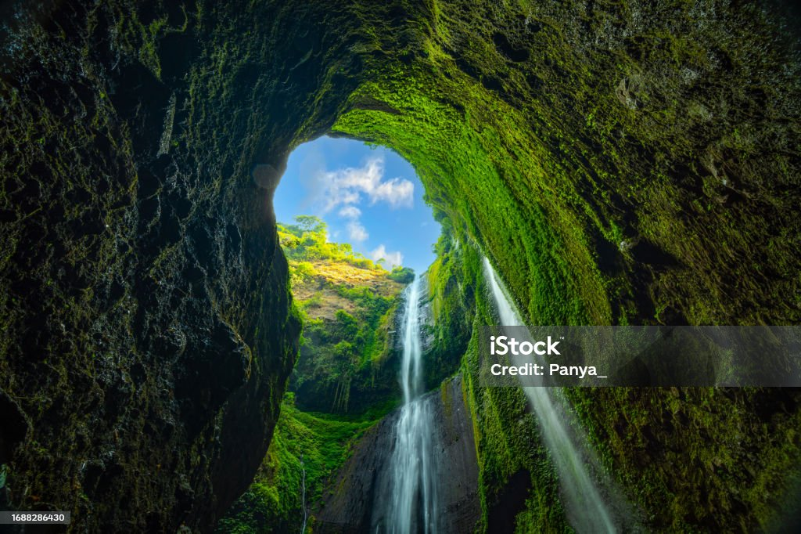
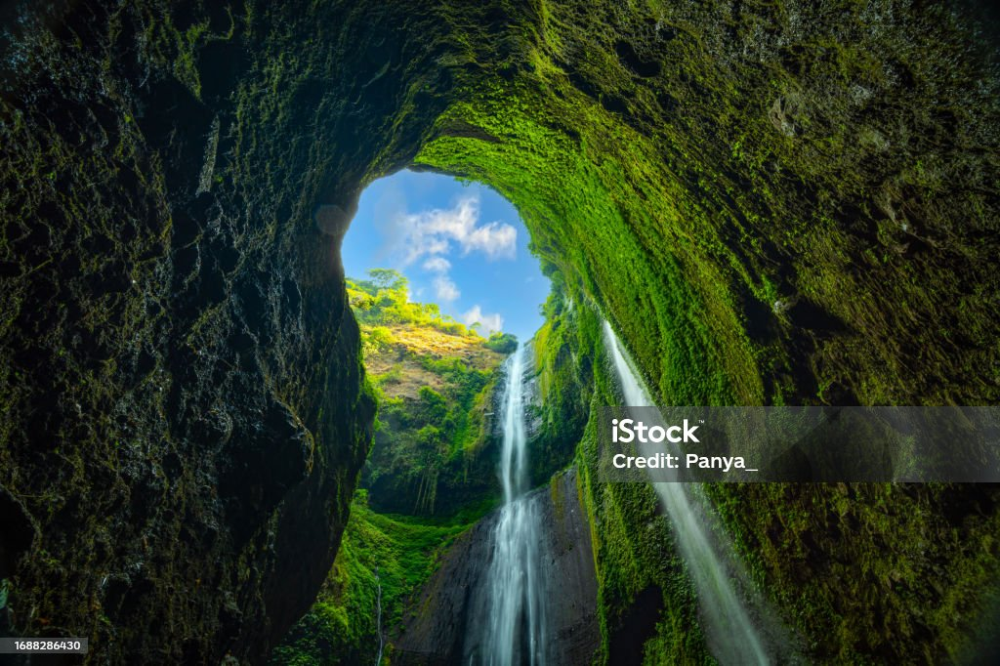

Taniti is a small, tropical island in the Pacific. While the island has an area of less than 500 square miles, the terrain is varied and includes both sandy and rocky beaches, a small but safe harbor, lush tropical rainforests, and a mountainous interior that includes a small, active volcano. Taniti has an indigenous population of about 20,000. Until a recent increase in tourism, most of the Tanitian economy was dominated by fishing or agriculture.
From pristine beaches and lush rainforests to charming villages and historic landmarks, Taniti is a treasure trove waiting to be explored. Dive into crystal-clear waters, hike through verdant trails, or immerse yourself in local traditions and festivities. Every corner of Taniti promises a new discovery.
Taniti offers a diverse range of activities for all types of travelers. Enjoy water sports, explore our rich marine life, indulge in culinary delights, or simply unwind in one of our luxurious resorts. Our vibrant arts scene, lively markets, and traditional crafts provide a deeper connection to the island’s rich heritage.
Planning your trip to Taniti is easy and convenient. Our comprehensive guides and friendly locals will help you navigate the best of what the island has to offer. From travel tips and accommodation options to must-see attractions and hidden gems, we ensure your stay is as seamless as it is enjoyable.
At Taniti, we are committed to preserving our natural beauty and cultural heritage. We encourage sustainable tourism practices to protect our environment and support our local communities. Join us in our efforts to make Taniti a responsible and thriving destination for future generations.

Taniti currently has 10 restaurants: five serve mostly local fish and rice, three serve American-style meals, and two serve Pan-Asian cuisine.
Taniti has two supermarkets, two smaller grocery stores, and one convenience store that is open 24 hours a day.

Taniti has a wide variety of lodging that ranges from an inexpensive hostel to one large, four-star resort. There are many small, family-owned hotels and a growing number of bed and breakfasts. All types of lodging are strictly regulated and regularly inspected by the Tanitian government.

If you need extra space, get an entire place all to yourself.

Stay in some of the most convenient locations with spaces in shared buildings.

Enjoy your own sleeping space and share a common area with others.

Most people visit Taniti to enjoy the beaches, explore the rainforest, and visit the volcano. However, there are other things to do, including visiting a local history museum, going on chartered fishing tours, snorkeling, zip-lining in the rainforest, visiting several pubs, including a microbrewery, dancing at a new dance club, seeing a movie, taking helicopter rides, playing at an arcade, visiting art galleries, and bowling. Also, a nine-hole golf course should be operational by next year. Many of these activities are in Merriton Landing, which is a rapidly developing area on the north side of Yellow Leaf Bay.
Most tourists spend most of their time in Taniti City, which boasts native architecture and nearby white, sandy beaches that encircle Yellow Leaf Bay.
Almost all visitors arrive in Taniti by air, though some arrive on a small cruise ship that docks in Yellow Leaf Bay for one night per week. Taniti is served by a small airport that can accommodate small jets and propeller planes. Taniti is in the process of expanding the airport so larger jets will be able to land on the island within the next few years.